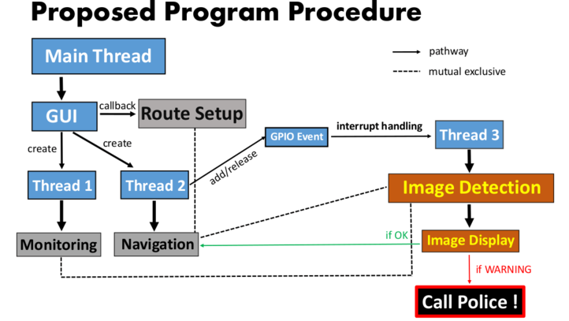
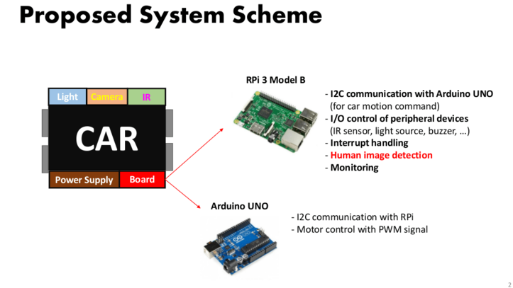
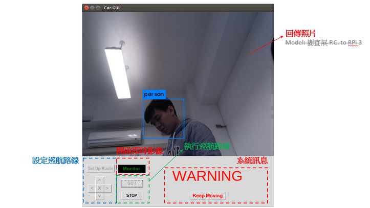

How It Runs
Working Flow
1.Program Procedure

2.System Scheme

3.Our GUI
a. 設定巡航路線
按下「Set Up Route」 -> 上下左右控制方向 -> 按下「X」-> 完成。
b. 執行巡航路線
按下「GO !」，ISG將開始巡航；按下「STOP」，ISG立刻中止動作。
※若未事先設定路線而執行巡航，程式將出現錯誤！
c. 系統訊息
若ISG偵測到人形物體，顯示「WARNING」；若偵測到其他物體，則顯示「OK」。您可藉由觀看回傳照片決定是否忽略，也可按下「KEEP MOVING」讓ISG繼續為您防護！
d. 開啟即時影像
按下「Monitor」，您可取得ISG即時監控影像。
※若未關閉監控影像，ISG將無法拍照辨識！